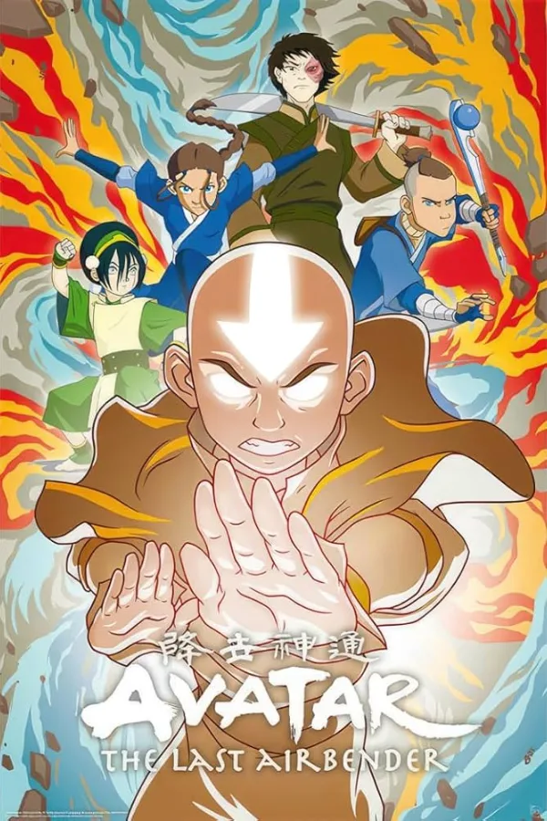
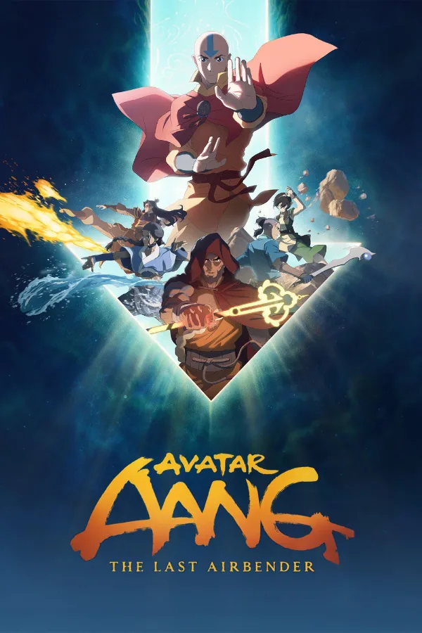
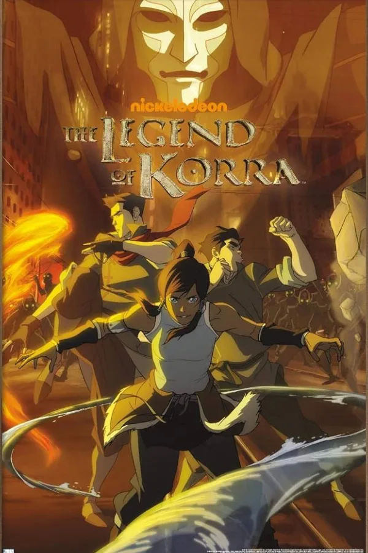
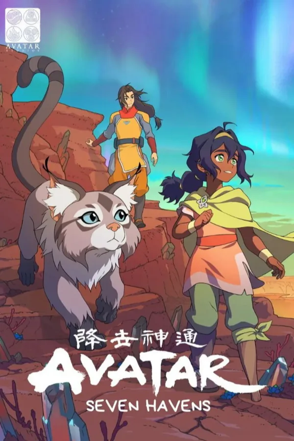
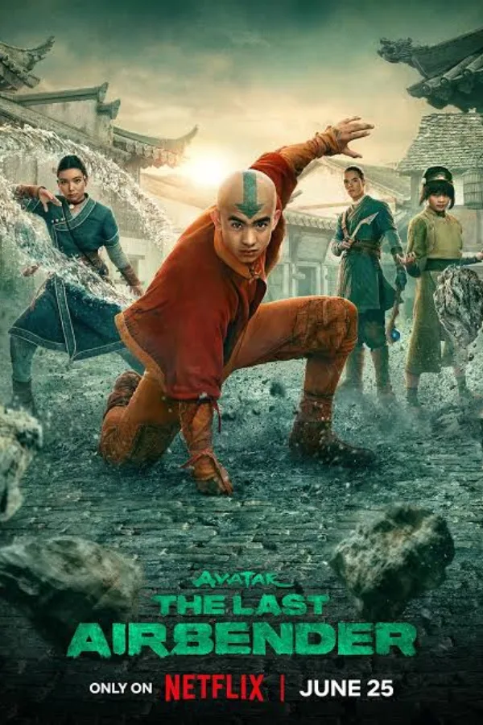

Avatar: The Last Airbender watch order.
The animated Avatar story in order, from Aang’s journey through Korra and the new Seven Havens series. Netflix’s live-action show retells the original, so it’s listed separately at the end.
Enter this code in Kuvacult to create this watchlist, already in order.
The Avatar story in order

1Avatar: The Last Airbender

2The Legend of Aang: The Last Airbender

3The Legend of Korra

4Avatar: Seven Havens
- 5
Avatar: The Last Airbender (live action), Season 1

6Avatar: The Last Airbender (live action), Season 2
Entries 5 and 6 are a retelling, not a continuation, so watch them any time after the original. A third season is in post-production. The 2010 film The Last Airbender is also a retelling, and it’s left out here.
Questions
What order should I watch Avatar in?
Watch Avatar: The Last Airbender, then the 2026 film The Legend of Aang: The Last Airbender, then The Legend of Korra, then Avatar: Seven Havens.
When does the Avatar Aang movie take place?
After the original series, with Aang and his friends as young adults, and before The Legend of Korra.
Do I need to watch the Netflix live-action series?
No. It retells the original animated series, so it doesn’t add to the timeline. Watch it any time after the original if you want a new take.
Should I watch Korra before Seven Havens?
Yes. Seven Havens is set after The Legend of Korra.
More watch orders


Can’t pick what to start with? Spin the movie roulette or settle it with blackjack.
Watch it with your friends.
Kuvacult is a free movie tracker with shared watchlists, a veto game for picking movie night, and séances for watching together.